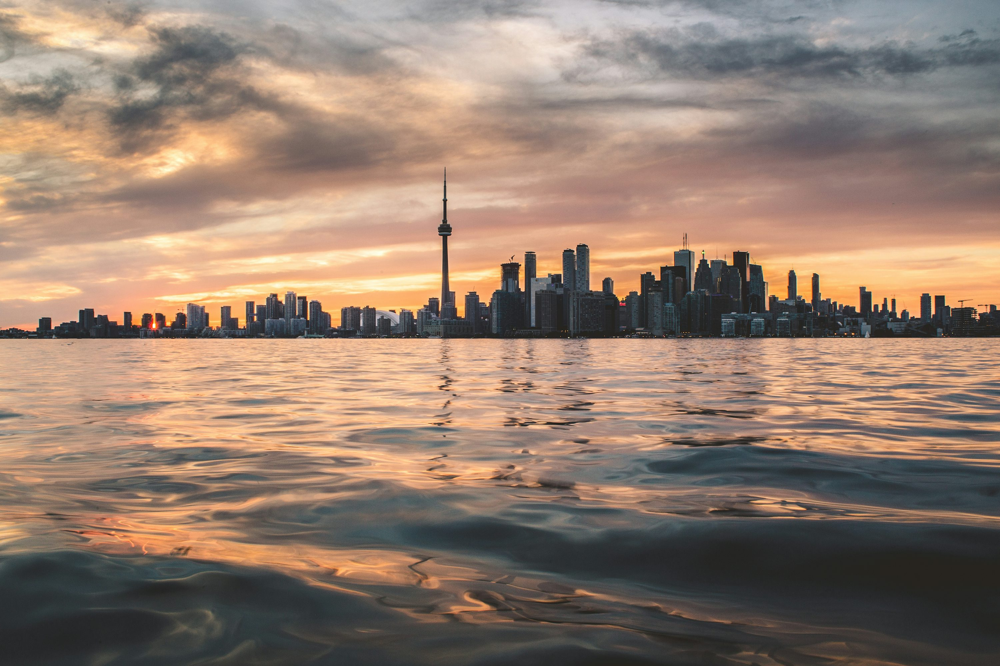
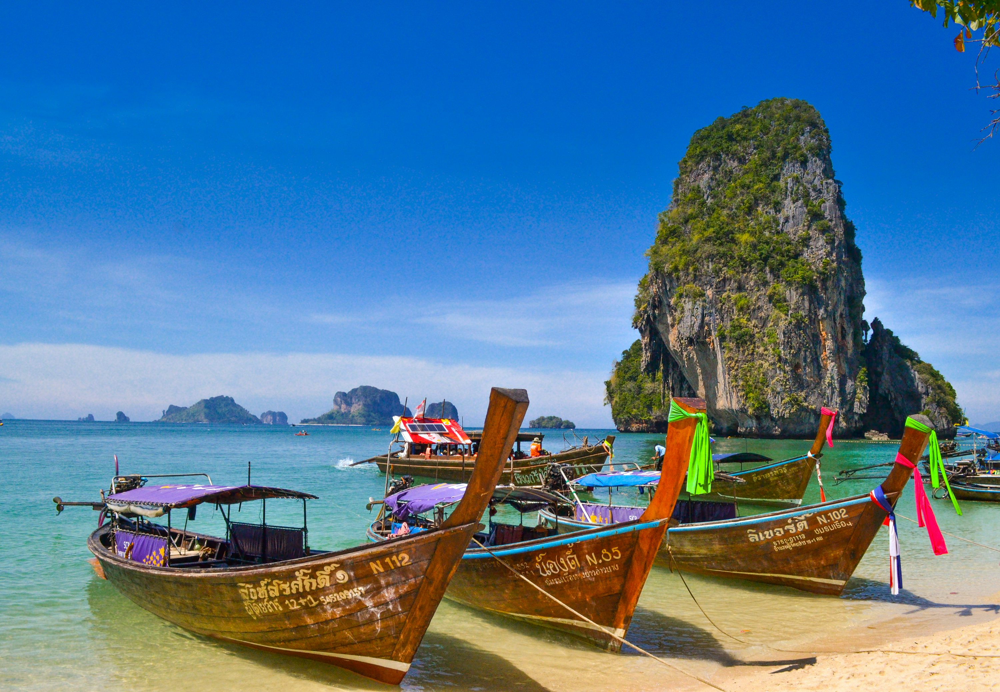

Canada
Canada, the second biggest country in the World. This tour will take you to both the east coast and west coast. We will start with the capital of Canada, Ottawa Ontario. Then we'll go to the metropolitan Toronto, the most diverse city in the world. We'll end our trip at a small island of Victoria, of the coast of British Columbia
MoreCambodia

Welcome to Cambodia, the oldest Buddhist country in South East Asia. With the biggest religious temple in the world, Cambodia is a country with rich history and culture. We will start at Siem Reap, home of the biggest Temple. After, we will travel to the capital city of Phnom Penh where we can learn more about the history under colonial rule. Lastly, we will go to Koh Rong Sanloem, one of the most beautiful beaches in the world.
MoreThailand
Thailand, country with the most tourism in the world. We will start at the capital of Bangkok with modernized mall and a lot of fun things to do. After that, we will go to Chiang Mai, a province with a lot of handicrafts. Then we will go to Phuket, a province known for their beach and seafood.
More